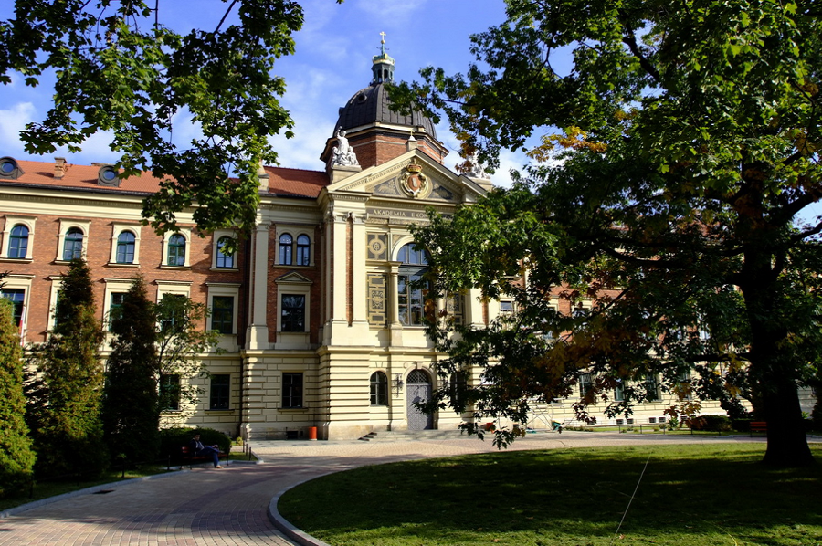

Uniwersytet Ekonomiczny w Krakowie (UEK) – jedna z pięciu polskich państwowych wyższych szkół ekonomicznych. Jest największym w Polsce pod względem liczby studentów uniwersytetem poświęconym naukom ekonomicznym, a także trzecią co do wielkości uczelnią w Krakowie (po Uniwersytecie Jagiellońskim i Akademii Górniczo-Hutniczej). Jest również drugą najstarszą w Polsce państwową uczelnią ekonomiczną.
Studiując ten kierunek poznasz przedmioty wchodzące w skład kanonu informatyki, a oprócz tego zyskasz solidne podstawy nauk ekonomicznych. Obok znajomości teoretycznych podstaw informatyki, budowy i zasad działania systemów komputerowych, programowania, baz danych, systemów operacyjnych, sieci komputerowych oraz projektowania systemów informacyjnych, będziesz mógł uzyskać wiedzę z zakresu ekonomii, zarządzania, przedsiębiorczości, rachunkowości czy prawa. Dzięki temu po skończeniu studiów będziesz dobrze rozumieć rzeczywistość gospodarczą i, tym samym, z powodzeniem będziesz mógł zarówno projektować, wdrażać, administrować i analizować systemy informatyczne wspierające działalność biznesową, jak również projektować oprogramowanie tworzące systemy informatyczne.
Kierunek Prawo utworzony w UEK ma charakter unikatowy w skali kraju. Powstał w wyniku kilkuletnich prac przygotowawczych. Ich efektem jest stworzenie planu i programu studiów dostarczających w sposób kompleksowy wiedzy z zakresu prawa, ze szczególnym uwzględnieniem prawa handlowego i podatkowego. Program studiów ma charakter interdyscyplinarny w tym znaczeniu, że łączy zagadnienia prawne z ekonomicznymi. Po ukończeniu studiów absolwent kierunku Prawo uzyska tytuł magistra prawa i będzie mógł ubiegać się o przystąpienie do egzaminów wstępnych na aplikacje prawnicze (np. adwokacką, radcowską, notarialną). Profil kształcenia na kierunku Prawo w UEK ułatwi absolwentowi zdawanie egzaminów stanowiących jeden z wymogów wykonywania takich wolnych zawodów jak np. doradca podatkowy, jak również umożliwi pełne wykorzystanie wiedzy w działalności gospodarczej.
Kierunek oferuje absolwentom wiedzę teoretyczną i umiejętności praktyczne z zakresu funkcjonowania mechanizmów gospodarczych na poziomie mikro, makro oraz w otoczeniu międzynarodowym. Program studiów umożliwia rozwijanie umiejętności analitycznego myślenia wymaganego w procesie podejmowania decyzji dotyczących gospodarowania zasobami rzeczowymi, finansowymi i ludzkimi. Bogata oferta specjalności realizowanych w ramach kierunku pozwala na rozwijanie zainteresowań naukowych przez każdego studenta.